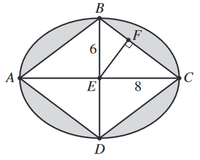

In the ellipse shown below, \(\overline{AC}\) is the major axis with length 16 feet, \(\overline{BD}\) is the minor axis with length 12 feet, and \(E\) is the center. Point \(F\) lies on side \(\overline{BC}\) of the inscribed rhombus \(ABCD\).

The eccentricity, \(e\), of an ellipse is a measure of the flatness of the ellipse. The eccentricity of a circle is 0. The value of \(e\) is given by the ratio \(\dfrac{\sqrt{a^2-b^2}}{a}\), where \(a\) and \(b\) are half the lengths of the major and minor axes, respectively. Which of the following intervals contains the value of \(e\) for this ellipse?